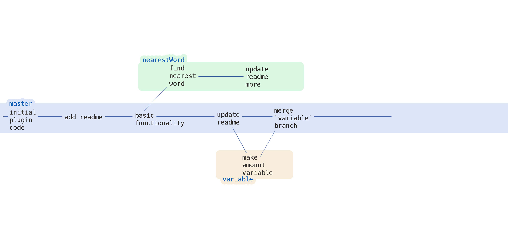
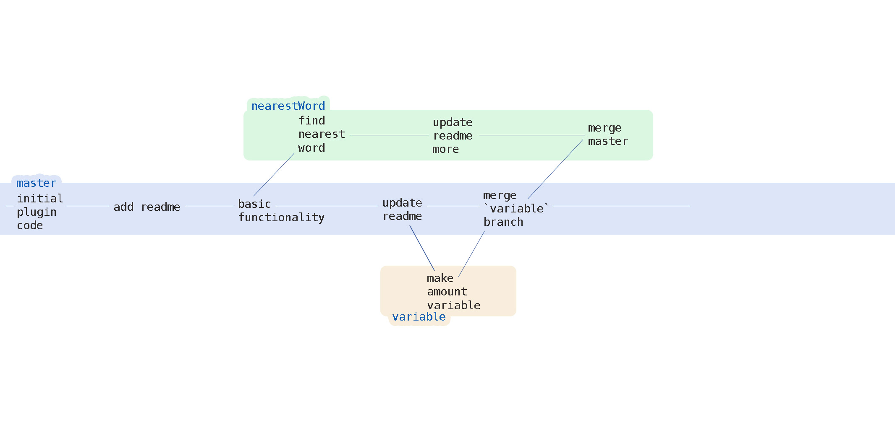
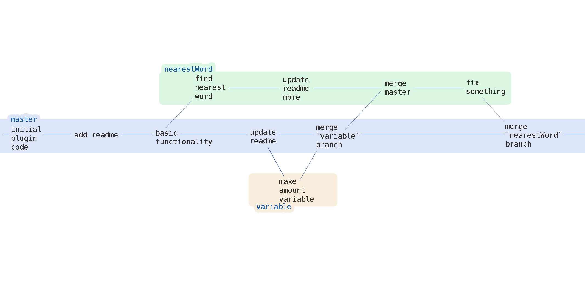

Dan Heberden - @danheberden - bocoup.com
Installing git: http://git-scm.com/book/en/Getting-Started-Installing-Git
If you're looking to use git with a GUI, I recommend http://www.git-tower.com/
`revision control`, `version control`, `source control`, `svn`, `cvs` -
forget about it
google docs
time machine
wordpress
you can access the history of what you did
+ We really hope you are enjoying roost!
We really hope you are enjoying roost!
+ Aren't Rebecca and Ben awesome?
+ Roost! It's really that awesome
- We really hope you are enjoying roost!
Aren't Rebecca and Ben awesome?
Here's the hangup: this isn't what git is about.
Have to make plugin that truncates text after 500 chars and adds …
make a git repository
think of a git "repository" as a project - it takes a folder, makes a folder
inside of it called .git and stores all the git information about it.
grab a copy of jQuery from a public git-based service (github.com)
$ git checkout 1.8.3
$ head -5 package.json #print out the first 5 lines
4
"name": "jquery",
"title": "jQuery",
"description": "JavaScript library for DOM operations",
"version": "1.8.3",
now let's tell git we want to look at version 1.8.1
$ git checkout 1.8.1
$ head -5 package.json #print out the first 5 lines
{
"name": "jquery",
"title": "jQuery",
"description": "JavaScript library for DOM operations",
"version": "1.8.1",
the file system responds to what you do in git - which is awesome and A VERY KEY POINT.
$ cd ~\Projects
$ mkdir roost
$ cd roost
now the fun part
$ git init
Initialized empty Git repository in /Users/danheberden/Projects/roost/.git/
git <command> arguments...
give it a shot
$ git status
# On branch master
#
# Initial commit
#
nothing to commit (create/copy files and use "git add" to track)
that makes sense - we didn't, you know, *do* anything yet.
so we have a repo now! \o/
$ cd ~/Projects
$ mkdir ellipser
$ cd ellipser
$ grunt init:jquery
# follow prompts #
edit project to have ellipser name and stuff
$ git status
# On branch master
#
# Initial commit
#
# Untracked files:
# (use "git add <file>..." to include in what will be committed)
#
# committedCONTRIBUTING.md
# mdLICENSE-MIT
# MITREADME.md
# ( ... removed files for brevity )
nothing added to commit but untracked files present (use "git add" to track)
git is smart
It realizes that you might have files that you don't
want to add. It also sees that you changed files in the folder that you haven't
told `git` to do anything with.
So if we tried to actually `commit` our files (more on this in a minute) git
won't have anything to actually commit.
$ git commit
# ...
# nothing added to commit but untracked files present (use "git add" to track)
we want control
notes
Having `git` track little change you make would be a nightmare to browse through,
track meaningful changes to code, and wouldn't let you describe those actions at all.
`
committakes a snapshot of the changes and adds them to your current branch
We haven't discussed branches yet, but we are on the default
"main" branch, called `master`.
com•mit v. to hand over, as for safekeeping; charge; entrust
This is essentially what a commit does. All of the files you have said to add to the current
branch will be handed over to it. Additionally, `git` asks for a message describing the
action. This makes reviewing past actions much more informative.
$ git add *
# new files listed
$ git status
# roughly the same output
Before, they were "untracked" - meaning, they were in the "staging"
area of git.
"staging" = where you are in your git repository v.s. changes to the git working
tree (the folder you made a git repo).
$ git commit
add a commit message
# Please enter the commit message for your changes. Lines starting
# with '#' will be ignored, and an empty message aborts the commit.
# On branch master
#
# Initial commit
#
# Changes to be committed:
# (use "git rm --cached <file>..." to unstage)
#
# new file: CONTRIBUTING.md
# ...
add a description of what this commit does up top
Create plugin grunt project and add template code.
# Please enter the commit message for your changes. Lines starting
# ...
When you save and close the file, git reacts:
[master (root-commit) 130c598] init
13 files changed, 11613 insertions(+)
We just added a commit! But what is 130c598?
Every commit creates a unique checksum (using SHA-1) of the changes and their location, resulting in a long
40 character ID.
Typically, the first 7 or 8 characters are used to represent this SHA.
So 130c598 is short for 130c59894b35988b7176127de80dac1af174ad9d.
This is important - every commit is a "thing" to git. It's a dot in your repositories timeline that has much significance.
Let's add some actual code to our plugin:
$.fn.ellipser = function() {
return this.each(function() {
var $el = $( this );
var txt = $el.html();
if ( txt > 500 ) {
$el.html( txt.slice(0,500) + '…' );
}
});
};
Super basic and generally crappy, but it's a start.
$ git add src/ellipser.js
even if you make a change to the document, git needs to be told to
do something with it - thus, you have to re git add if you edit the
file more.
$ git commit -m "Add basic functionality to truncate text past 500 characters for each element."
some flags, like 'm' for 'message' use the following argument (in this case, a quoted string) for its value. This way we can just pass a simple commit message inline with the commit command.
Lets see what we have so far.
$ git show
This shows the latest activity on the branch. We can see our file changes for each commit.
Building an application often requires multiple things being worked on at once, while maintaining a base/main/preferably-working version.
there is also a need to put those other pieces into the base/main version
As you develop applications, the need to build out different pieces arises. Even if
it's just you working on a project, being able to work on something, set it aside, and come
back to it while not blowing up the working copy is pretty handy.
Even moreso is the need to shove those changes back in. And `git`'s solution for this?
Looks easy

make plugin break at closest word to 500 chars
$ git branch nearestWord
$ git checkout nearestWord
created a branch of master (the branch we were on) called nearestWord. Then, we switched
to that new branch by using git checkout.
see all the branches with:
$ git branch
These branches are identical right now
so lets work on the javascript
var slice;
if ( txt > 500 ) {
//remove chars after last found space
slice = txt.slice( 0, 500 )
.replace( /\s([^\s+])+$/, '' );
$el.html( slice + '…' );
}
$ git add src/ellipser.js
$ git commit -m "remove letters after last space on shortened text to look better"
Let's leave that be for now - our working tree is clean, so we can switch over to master.
$ git checkout master
add another feature. Let's fix that whole "500 characters" thing.
As we like to do for sanity sake, make a new branch and check it out:
$ git checkout -b variable
-b stands for branch - this lets you create and switch to a branch in one line
So, as you can expect, this new branch won't have our new changes from `nearestWord`
in it.
$.fn.ellipser = function( amount ) {
amount = amount || 500;
return this.each(function() {
var $el = $( this );
var txt = $el.html();
// shorten the text to only 500 chars
if ( txt > amount ) {
$el.html( txt.slice(0,amount) + '…' );
// ...
}
$ git add src/ellipser.js
$ git commit -m "Update ellipser to accept how many characters to show"
let's assume this new feature is done, tested, etc and we want to incorporate it into master
$ git checkout master
$ git merge variable
merge takes the variable branch and stuffs it into the current branch
We've switched back to master, which is our new working tree. When we specify to
merge variable, we are literally saying "merge variable's changes into the current
branch".
Since, upon merging content into master, those lines haven't been changed by any other
commits there's no conflict. However, had we made a change to any of those lines in master and
THEN tried to merge in this branch, git wouldn't know which change we wanted; thus, we would
have to resolve those ourself.
dealing with long-term branches
So now we have an issue. We want to hop back to our `nearestWord` branch to work on it,
but wouldn't it be great to grab the latest updates to master?
We could just merge in master like we did with the other branch, but that would look weird
in our timeline - having some commits for the `nearestWord` feature, commits for the
variable length feature, and then more `nearestWord` commits.

merged in, which is *ok* i guess

ugh, now we're going to have our commits all over the place


could do this manually
and I've actually seen people do this (ok, i've done this). They save their completed
work somewhere else, make a new branch, and then paste in the new code and commit THAT. It's
a novel idea, but not quite ideal.
Instead of that original commit being based off of way back when we first started the plugin,
let's rebase. That will change that source commit to the current commit in master, and then
re-apply all of our commits as if we just made them.
Another advantage besides this looking way more sensible in the time-line, is rebasing will
stop on each commit to resolve a merge conflict. This means if there is some oddity between
your branch and the new code, you can sensibly address it on a commit by commit basis instead of
a big lump like in a merge.
easier merging, since every commit is replayed individually
what do they look like?
<<<<<<< HEAD
conflicting statement A
=======
conflicting statement B
>>>>>>> 4e2b407f501b68f8588λ645acafffa0224b9b78:nearestWord
is there any easier way?
Tools like: kdiff3, vimdif, p4merge
basically lets you easily review the conflicts and choose how you want to merge
just shove the commits from the branch in master


git is smart and if there are multiple ancestors of the commit, it does a merge on those independently and uses that result in your full merge.
sometimes you are at a point you want to label
git tag v1.0.0
makes the current place you're at in the repository (the commit)
associated with the tag labeled v1.0.0.
this is actually that simple - a tag is a label for a commit.
you can list tags with git tag --list
tags
heads
you have a big repository of commits, grab one
git checkout changes your working tree to a specific place in your repository
and you can even specify a file!
git checkout branchName file
you can alter where your branch is using reset. For example, to erase the last commit you could:
$ git reset --hard HEAD~1
which says reset to the current head minus 1 commit.
you could also put a commit SHA there to reset too.